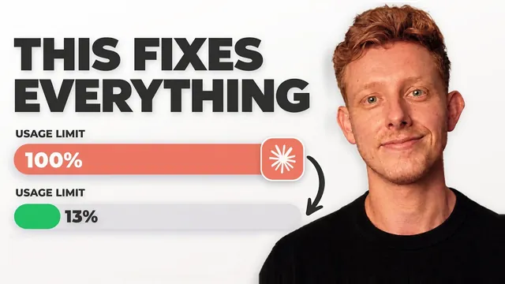

토큰 한도 다시 안 터뜨리는 Fable 5.1 꿀팁 6가지

원본 영상 보기 →
- 서브에이전트 모델 지정 한 줄이 가장 확실한 절감 포인트예요
- 토큰을 많이 준다고 결과가 좋아지는 게 아니라 오히려 나빠져요
- Anthropic 가이드가 프롬프트 설계의 기준을 줍니다
한 줄 요약
Claude(Fable 5.1) 같은 강력한 모델이 순식간에 토큰 한도를 태우는 진짜 이유와, 서브에이전트 모델 지정 한 줄부터 대화 습관까지 토큰 사용량을 최대 90%까지 줄이는 6가지 실전 팁입니다.
전체 내용 정리
토큰 폭탄의 주범은 서브에이전트예요
Fable 5.1 같은 모델은 복잡한 작업을 시킬 때 자동으로 여러 서브에이전트를 띄웁니다.
예를 들어 지난 2개월 치 고객 상담 통화 전체를 분석해 고객 인텔리전스 리포트를 만들어 달라고 했더니 67개의 서브에이전트가 동시에 상담 스크립트를 분석했어요. 결과물 자체는 제품 로드맵과 고객 프로필 분석까지 담을 만큼 훌륭했습니다.
문제는 이 67개가 기본값으로 전부 가장 비싼 모델로 돌아갔다는 점이에요. 이 작업 하나의 비용이 350달러까지 나왔습니다.
그런데 프롬프트에 "서브에이전트를 쓸 때는 항상 Sonnet 5로 실행해라"라는 지시 한 줄만 추가했더니, 거의 동일한 품질의 리포트가 44달러에 나왔어요. 80~85% 절감입니다.
서브에이전트 자체를 없앨 수는 없어요. 오케스트레이터 모델이 방대한 자료를 직접 다 읽으면 100만 토큰짜리 컨텍스트 한도에 금방 부딪히고, 설령 다 읽더라도 정작 중요한 분석을 시작하기도 전에 토큰을 너무 많이 써서 모델 성능이 떨어지는 구간("덤 존")에 진입해 버리거든요.
서브에이전트는 이 '읽고 요약하는 지저분한 작업'을 나눠 맡고 요약만 돌려줍니다. Anthropic도 자체 가이드에서 오케스트레이터는 Fable로, 서브에이전트의 리서치·읽기 작업은 Sonnet이나 Opus로 돌리라고 권장해요. 더 확실히 하려면 "리서치하거나 스크립트를 읽을 때는 항상 Sonnet 5로 돌아가는 서브에이전트를 사용해라"처럼 구체적으로 지시해도 됩니다.
대화를 시작하는 순간부터 이미 새고 있어요
새 대화를 열고 아무 프롬프트도 입력하지 않은 시점에 이미 토큰이 소모됩니다. 실제 사례로는 프롬프트를 치기도 전에 8만 4000토큰이 소모돼 있었어요.
Claude Code나 Claude Desktop에서 /context를 입력하면 이 소모 내역을 바로 확인할 수 있습니다(단, Cowork에서는 이 명령이 동작하지 않고 실제 소모량은 더 클 것으로 보여요).
소모 원인은 크게 두 가지입니다.
하나는 시스템 프롬프트 등 손댈 수 없는 시스템 도구 영역이에요(CLAUDE.md를 깔끔하게 관리하는 정도는 가능합니다).
다른 하나는 MCP 도구와 스킬입니다. 연결된 MCP·커넥터·스킬·플러그인 정보를 전부 불러와야 어떤 걸 쓸 수 있는지 판단할 수 있거든요. 그런데 대부분의 사람은 실제로는 잘 안 쓰는 것들을 여러 개 연결해 둔 채 방치합니다. Customize 탭에서 완전히 삭제할 필요 없이 비활성화만 해도 토큰을 아낄 수 있어요.
추가로 Composio라는 메타 커넥터를 쓰면, 여러 소프트웨어를 하나하나 개별 커넥터로 연결하는 대신 Composio 커넥터 하나만 연결해 두고 Composio가 알아서 올바른 서비스로 라우팅하게 만들어 커넥터 로딩 비용 자체를 줄일 수 있습니다.
반복 수정 대신 처음부터 제대로 주세요
최신 고성능 모델을 쓸 때 가져야 할 태도 전환이 있어요. 대충 던져 놓고 여러 번 주고받으며 다듬는 대신, 처음부터 작업 전체를 제대로 정의해서 주는 것입니다.
이유가 두 가지예요. 이런 모델들은 애초에 작업 전체가 한 번에 주어졌을 때 가장 잘 훈련돼 있고, 무엇보다 대화를 반복할 때마다 모델이 그 전 대화 전체를 처음부터 다시 읽기 때문에 주고받을수록 비용이 기하급수적으로 늘어납니다.
처음부터 80% 완성도의 결과물이 나오면 한두 번의 소소한 수정만 하면 되고, 성능 저하 구간에 덜 빠지며, 굳이 높은 리즈닝 강도를 쓰지 않고도 중간 강도로 좋은 결과를 얻을 수 있어 그만큼 토큰이 절약돼요.
Anthropic의 프롬프트 작성 가이드에 기반한 4가지 체크포인트는 이렇습니다.
- 하려는 작업과 목표 전체를 준다
- 그 작업의 의도("왜")를 설명한다 — 의도를 이해할 때 모델 성능이 훨씬 좋아져요
- 가드레일을 정의한다 — 잘못될 수 있는 지점들을 미리 생각해서 규칙으로 적어 두는 겁니다. 앞서 나온 "서브에이전트는 Sonnet으로"도 여기 들어가요
- '완료'가 어떤 모습인지 정의한다 — 출력 예시를 주거나 끝난 상태를 구체적으로 정의해 두면 모델이 과하게 일을 벌이는 걸 막을 수 있습니다
프롬프트를 짜기 전 생각 정리가 안 됐다면 두 가지 방법이 있어요. 질문을 던져 필요한 정보를 끌어내고 그 프레임워크에 맞춰 프롬프트를 완성해 주는 "interview me" 스킬을 쓰거나, Whisperflow 같은 음성 전사 도구로 생각나는 대로 브레인덤프한 뒤 "prompt master" 스킬로 정돈된 구조로 재구성하는 겁니다.
모델을 바꾸지 말고 이펙트 레벨만 낮추세요
아무리 사전 계획을 잘해도 결국 몇 번의 수정은 필요하죠.
이때 모델은 그대로 두고 이펙트(effort) 레벨만 낮추면, 모델이 추론을 덜 하게 돼 토큰을 덜 쓰면서도 같은 모델을 계속 쓸 수 있습니다. 대시보드 레이아웃을 약간만 손보고 싶다면 로우(low)로 전환하면 돼요.
예전에는 이펙트 레벨을 바꾸면 이전 대화 전체를 처음부터 다시 읽어야 해서 오히려 토큰을 더 썼습니다. 그런데 Opus 5와 Fable 5.1부터는 대화 중간에 이펙트 레벨을 바꿔도 캐시가 깨지지 않아 전체를 다시 읽지 않아요.
반대로 모델 자체를 바꾸면 그 순간 캐시가 깨지며 대화 전체를 다시 읽습니다. 다만 Opus나 Sonnet은 애초에 토큰을 덜 쓰는 모델이라, 그 수정 작업에 고성능이 필요 없다면 모델을 바꾸는 것도 여전히 이득일 수 있어요.
한 대화창에서는 한 작업만 하세요
아침에 작업 A, 오후에 작업 B, 밤에 작업 C를 같은 대화창에서 이어가면, 세 번째 작업을 할 때 모델은 전혀 관련 없는 앞선 두 작업의 맥락까지 전부 다시 읽어야 합니다. 토큰을 낭비할 뿐 아니라 성능 저하 구간에 더 일찍 진입해 결과물의 질도 떨어져요.
단일 작업만 하는 긴 대화라도 마찬가지입니다. /usage 같은 빌트인 스킬로 토큰 소모량을 확인하다가, 한 대화에서 소모가 일정 수준을 넘어서기 시작하면 작업이 아직 끝나지 않았더라도 새 대화로 옮겨서 이어가는 게 낫습니다.
Claude Code에서는 /context로 현재 토큰 소모 위치를 확인할 수 있고, /compact는 지금까지의 대화를 요약해서 같은 맥락을 유지한 채 새로 이어갈 수 있게 해줘요. 토큰 한도를 정해 두면 자동으로 컴팩트되는 모드도 있고요.
다만 /compact는 필요한 맥락을 충분히 살리지 못할 때가 많고 Cowork에서는 쓸 수도 없습니다. 그래서 이전 대화의 핵심을 더 포괄적으로 정리해 주는 /refresh라는 커스텀 스킬을 직접 만들어 쓰고 있어요. 이 스킬은 다음 세션의 목표를 물어본 뒤 이전 대화의 관련 맥락을 담은 긴 프롬프트를 만들어 주고, 이를 새 세션에 붙여넣으면 맥락 손실을 최소화하면서 이어갈 수 있습니다.
토큰만 갉아먹는 지시 습관 세 가지
Anthropic이 직접 짚은 세 가지 패턴은 토큰만 낭비하고 실익이 없어요.
첫째, "다시 한번 확인해 줘", "응답 전에 두 번 검증해 줘" 같은 지시. 모델이 이미 그렇게 하도록 학습돼 있어서, 이런 말을 넣으면 검증을 이중으로 해버려 토큰만 더 씁니다.
둘째, "최대한 철저하게", "무조건 반드시" 같은 과도한 강조 표현. 모델이 과도하게 점검하고 불필요한 도구 호출을 늘리게 만들어요.
셋째, 고정된 단계별 절차나 번호 매긴 목록, "단계별로 생각해 봐" 같은 지시.
Anthropic이 실제로 테스트한 결과, 이 세 가지를 쓰지 않았을 때 토큰 소모는 15% 줄고 정확도는 오히려 5% 올랐습니다.
핵심 인사이트
- 서브에이전트 모델 지정 한 줄이 가장 확실한 절감 포인트예요: 같은 품질의 결과물을 80~85% 더 싸게 뽑아낸 사례(350달러 → 44달러)는, 복잡한 리서치·분석 작업을 자동화로 돌리는 사람이라면 오늘 당장 프롬프트에 추가할 수 있는 가장 확실한 ROI입니다.
- 토큰을 많이 준다고 결과가 좋아지는 게 아니라 오히려 나빠져요: 컨텍스트 소모가 늘수록 모델 성능이 떨어지는 구간에 들어갑니다. 무작정 자료를 다 밀어넣기보다 사전 계획과 서브에이전트 위임으로 오케스트레이터를 "똑똑한 구간"에 오래 머물게 하는 게 핵심 전략이에요.
- Anthropic 가이드가 프롬프트 설계의 기준을 줍니다: 작업·의도·가드레일·완료 정의의 4단계 프레임워크와, "이중 확인"·"과도한 강조"·"고정 단계 지시"를 피하라는 실측 데이터(토큰 15% 절감, 정확도 5% 향상)는 감이 아니라 공식 벤치마크에 기반한 규칙이라 신뢰도가 높아요.
오늘 당장 해볼 것
- 복잡한 리서치나 분석 작업을 시킬 때마다 프롬프트 맨 아래에 "서브에이전트를 쓸 때는 항상 Sonnet 5로 실행해라"를 추가해 보세요. 한 줄로 비용이 5분의 1로 줄어듭니다.
- Customize 탭에서 최근에 실제로 쓰지 않은 MCP·커넥터·스킬·플러그인을 비활성화하고,
/context로 대화 시작 시점의 토큰 소모량을 확인해 보세요. - 새 작업을 시작할 때 프롬프트에 작업과 목표, 의도, 가드레일, 완료 기준 네 가지를 채워 넣어 보세요. 대화가 길어지면 새 대화로 옮기거나
/compact를 활용하면 됩니다.